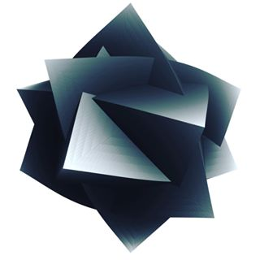

<section id="ic" class="main">
  <figure><a href="https://www.instagram.com/artematician/"></a></figure>
  <header><h2>I'm interested in Data Visualization, Computer Graphics, Computational Design, Mathematical Art and Digital Fabrication.</h2></header>

  <!-- <section class="latest">
    <ul><li><a href="https://medium.com/@philogb/a2c5445144c6?source=friends_link&sk=bb9a7ce802b8aeae09cc8f9fd1e72efa"><figure><div class="image" style="background-image: url(assets/hyperfloors/1.jpg); background-position: center center;"></div><figcaption>Hyperbolic Floors</figcaption></figure></a></li><li><a href="https://medium.com/vis-gl/unfolding-the-earth-myriahedral-projections-in-webgl-6b2bcfd00a30"><figure><div class="image" style="background-image: url(assets/myriad/1.jpg); background-position: center center;"></div><figcaption>Myriahedral Projections</figcaption></figure></a></li><li><a href="https://medium.com/@philogb/math-inspired-art-e4c1a88f69e6"><figure><div class="image" style="background-image: url(assets/mathart/1.jpg); background-position: center center;"></div><figcaption>Digital Fabrication</figcaption></figure></a></li></ul>
    <ul><li><a href="http://philogb.github.io/band-nexus/#Chris%20Vrenna"><figure><div class="image" style="background-image: url(assets/bandtree/1.jpg); background-position: center center;"></div><figcaption>Hyperbolic Browser</figcaption></figure></a></li><li><a href="http://philogb.github.io/page/hopf/"><figure><div class="image" style="background-image: url(assets/hopf/1.png); background-position: center center;"></div><figcaption>Hopf Fibrations</figcaption></figure></a></li><li><a href="https://philogb.github.io/page/wind/"><figure><div class="image" style="background-image: url(assets/wind/1.jpg); background-position: center center;"></div><figcaption>Wind Visualization</figcaption></figure></a></li>{% for post in site.posts %}{% if post.category == 'Visualization'%}<li><a href="{% if post.fullurl %}{{post.fullurl}}{% else %}{{post.url }}{% endif %}"><figure><div class="image" style="background-image: url({{ post.thumb }}); {% if post.position %}background-position: {{post.position}} {% endif %}"></div><figcaption>{{ post.title }} <ul class="tags">{% for tag in post.tags %}<li class="{{tag}}">{{tag}}</li>{% endfor %}</ul></figcaption></figure></a></li>{% endif %}{% endfor %}</ul>
  </section>
</section> -->

<section class="latest">
<ul>
{% for post in site.posts %}{% if post.category == 'Visualization'%}<li><a href="{% if post.fullurl %}{{post.fullurl}}{% else %}{{post.url }}{% endif %}"><figure><div class="image" style="background-image: url({{ post.thumb }}); {% if post.position %}background-position: {{post.position}} {% endif %}"></div><figcaption>{{ post.title }} <ul class="tags">{% for tag in post.tags %}<li class="{{tag}}">{{tag}}</li>{% endfor %}</ul></figcaption></figure></a></li>{% endif %}{% endfor %}</ul>
</section>
